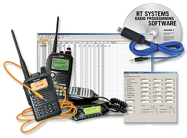

Добро пожаловать на сайт радиолюбителей города Климовичи!
Содержание сайта формируется за счёт
собственных — авторских статей, а
также по реферативному принципу — на основе информации,
собранной в Интернете, тщательно переработанной и систематизированной в
соответствии с той или иной темой.
В случае, если материалы практически не подвергались
переработке, их источники указываются всегда.
Информация для радиолюбителей.
Новые публикации.
- В разделе «Радиосвязь на КВ» опубликована статья Реверсивный тракт на SA612. Основная плата трансивера «STEP».
Программирование радиостанций Motorola профессиональной/коммерческой серии, цифровых DP/DM серии; Kenwood, Baofeng, Retevis и др.

Современные радиостанции, как и любое электронное оборудование,
нуждаются в качественном обслуживании. Кроме того, чаще всего
радиостанции приобретаются с определёнными настройками, изменить
которые самостоятельно не так-то и просто.
Радиостанции типа Kenwood, Baofeng, Retevis часто продаются
запрограммированными на частоты диапазона FRS (462 МГц), который
разрешён в Америке и запрещён к использованию в Европе.
Для избежания проблем с контролирующими органами необходимо изменить
прошивку на безлицензионные диапазоны LPD/PMR.
Обновление и установка программного обеспечения, программирование
каналов:
Приостановка членства Республики Беларусь и Росийской федерации в CEPT.
На основании запроса ряда членов CEPT Председательство CEPT провело письменную процедуру, в соответствии с Договоренностью CEPT, по предложению приостановить на неопределенный срок и с немедленным вступлением в силу членство Российской Федерации и Беларуси в CEPT.
На письмо Ассамблеи CEPT было получено 34 ответа в поддержку предложения и один воздержался.
Исходя из вышеизложенного, Ассамблея CEPT решила:
- приостановить на неопределенный срок членство Российской Федерации и Беларуси в СЕПТ.
- что отстранение указанных членов CEPT вступит в силу с 00:00 (CET) 18 марта 2022 года.
- что любой будущий повторный прием в CEPT будет следовать обычным правилам, установленным в договоренности CEPT, в частности, необходимо, чтобы такое решение было одобрено большинством в две трети членов CEPT.
Кроме того, Председатель CEPT просил Офис принять все необходимые меры для реализации вышеупомянутых решений.
Основная задача CEPT — рассмотрение в рамках Европы
вопросов государственной политики и нормативных документов, относящихся
к сферам почты и электросвязи, а также вопросам использования
радиочастотного спектра.
Также СЕРТ занимается подготовкой европейских предложений на конгрессы
и конференции МСЭ и Всемирного почтового союза и их рабочих органов,
вопросами организации и функционирования служб электросвязи и почты, а
также гармонизации этих служб в рамках Европы.
Плата за использование радиочастотного спектра.
В соответствии с Указом Президента Республики Беларусь от 18 апреля 2006 г. № 240 «О плате за использование радиочастотного спектра» и постановлением Совета Министров Республики Беларусь от 15 июля 2006 г. № 890 «Об установлении порядка определения размера ежегодной, разовой платы и платы за выделение радиочастотного спектра» (далее Постановление) ежегодная плата пользователем радиочастотного спектра вносится с 1 января по 31 января года, в течение которого пользователь имеет право использовать этот спектр.
Плата в республиканский бюджет за выделение и использование радиочастотного спектра, код платежа 04106, оформляется на счета Главного Управления Министерства финансов Республики Беларусь по г.Минску.
Реквизиты для оплаты:
| Получатель (бенефициар) | Главное управление Министерства финансов Республики Беларусь по г. Минску |
| Код платежа | 04106 |
| Код вида платежа по ISO | TAXS 90101 |
| УНП бенефициара | 100049877 |
| Наименование банка | ОАО "АСБ БЕЛАРУСБАНК", г. МИНСК |
|
BIC банка
действующий
с 01.01.2019
|
AKBBBY2X |
|
Номер счета действующий
с 01.01.2019
|
BY60 AKBB 3602 9810 1000 5000 0000 |
Копия документа, подтверждающего внесения платы, представляется в РУП «БелГИЭ» не позднее 3 рабочих дней со дня её внесения.
Размер ежегодной платы рассчитывается пользователем радиочастотного
спектра самостоятельно, в соответствии с Постановлением, исходя из
базовой ставки в размере 0,14 эквивалентного размера базовой арендной
величины.
Для радиолюбителей расчёт размера ежегодной платы за использование РЧС
РЭС любительской и любительской спутниковой радиослужбы производится по
каждому присвоенному классу радиолюбителя, независимо от количества
используемых РЭС.
Справочно:
сумма ежегодной платы за использование радиочастотного спектра
радиолюбителями составляет:
класс А - 5,73 BYN
класс B - 3,08 BYN
класс C - 1,35 BYN
По вопросам радиолюбительской службы можно обращаться по телефонам:
Могилевская область - +375 (222) 77-59-80
ПРОГНОЗ ПРОХОЖДЕНИЯ НА ЛЮБИТЕЛЬСКИХ ДИАПАЗОНАХ.
Главная | О своём городе | Антенны | Радиосвязь на КВ | Радиосвязь на УКВ | Форум
Copyright © 2024 Сайт радиолюбителей г. Климовичи | Design by homemade.